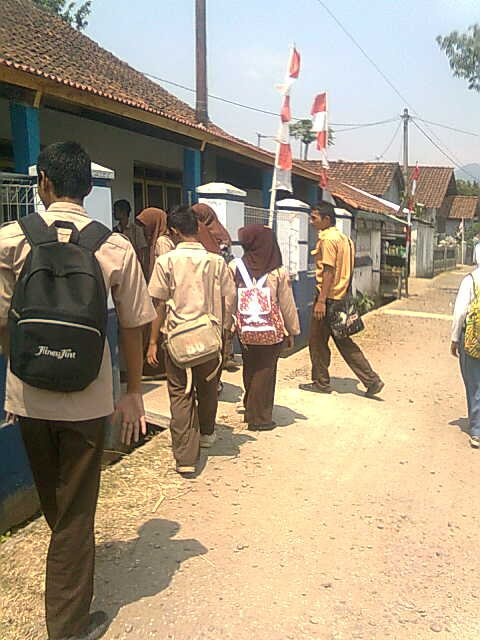
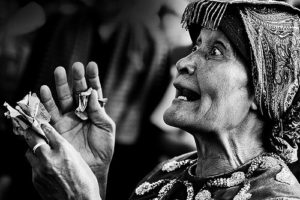

Hak Cipta di Ruang Kelas, Tips Pendekatan Praktis untuk Guru

{kind=link}
Pada tanggal 11 Juni 2016 lalu saya hadir sebagai peserta di acara WikiLatih yang diadakan di markas Wikimedia Indonesia. Wikilatih merupakan pelatihan penulisan dan penyuntingan artikel di Wikipedia Bahasa Indonesia yang rutin diadakan oleh Wikimedia Indonesia. Pada pelatihan tersebut saya tergabung sebagai peserta yang sudah pernah menyunting dan menyumbangkan artikel di Wikipedia Bahasa Indonesia. Kebetulan ada peserta lain yang membawa sebuah modul buatan gurunya yang ia ingin jadikan rujukan untuk artikel yang dibuatnya. Namun, modul tersebut tidak mencantumkan daftar pustaka ataupun informasi tentang penulis-penulis yang karyanya dilibatkan di modul tersebut. Setelah menimbang bahwa sumber dari modul tersebut tidak jelas, modul kemudian ditolak sebagai sumber oleh pelatih yang membawakan penulisan, karena sumber yang layak merupakan garis pedoman dalam menyumbangkan artikel di Wikipedia.
Kejadian ini menjadi salah satu indikator bahwa dalam kegiatan belajar-mengajar, para guru harus memperhatikan ketentuan-ketentuan hukum hak cipta.
Setelah menimbang bahwa sumber dari modul tersebut tidak jelas, modul kemudian ditolak sebagai sumber oleh pelatih yang membawakan penulisan, karena sumber yang layak merupakan garis pedoman dalam menyumbangkan artikel di Wikipedia.

{kind=link}
Secara alamiah kegiatan belajar-mengajar melibatkan perpindahan informasi, pembuatan, dan pembagian bahan ajar kepada murid-murid, baik di ruang kelas dengan atau tanpa bantuan internet. Semakin sering pendidikan menggunakan bantuan internet—untuk mengumpulkan materi dan merangkumnya dalam suatu modul—maka semakin dekat juga guru dan murid dengan dunia hak cipta.
Ini tidak hanya berlaku bagi guru yang sering membuat modul. Pelimpahan hak cipta dari pihak guru sebagai penulis buku pelajaran kepada penerbit seringkali menjadi penghalang bagi para guru tersebut untuk membagikan karyanya di kanal yang lain. Artikel ini mengulas bagaimana hak cipta mempengaruhi kegiatan belajar mengajar dan bagaimana para guru dapat mengungkit hak cipta (atau ketiadaan hak cipta) untuk mendukung kebutuhan dari murid-muridnya.
Bagi para guru yang ingin mengajar dengan menggunakan konten yang terdapat di internet tanpa melanggar hukum, artikel ini untuk Anda…
1.) Mencari dan menggunakan bahan ajar terbuka (bebas hak cipta)
Tidak semua bahan ajar yang ingin Anda gunakan dilindungi oleh hak cipta. Karena hak cipta tidak abadi, adalah penting untuk mengetahui jangka waktu perlindungan hak cipta di Indonesia. Perlindungan tersebut berlangsung selama dari 25 hingga 70 tahun setelah Pencipta meninggal dunia, terhitung sejak tanggal 1 Januari tahun berikutnya. Untuk informasi lebih lanjut terkait ketentuan masa berlaku hak cipta anda bisa membuka tautan ini.
Pelimpahan hak cipta dari pihak guru sebagai penulis buku pelajaran kepada penerbit seringkali menjadi penghalang bagi para guru tersebut untuk membagikan karyanya di kanal yang lain.
Ketentuan yang sama juga berlaku di Eropa. Namun, di Eropa, Anda dapat melepaskan karya Anda ke Domain Publik. Sayangnya, ketentuan tersebut tidak tersedia berdasarkan hukum di Indonesia. Kita dapat berasumsi bahwa hampir semua karya yang dibuat sebelum tahun 1870, pada tahun 2016 telah menjadi milik publik—yang berarti karya-karya tersebut sudah tidak dilindungi oleh hak cipta dan dapat Anda gunakan, gandakan, dan bagikan dengan bebas.
Sebagai contoh, di Indonesia, karya-karya Chairil Anwar (Aku, Kerawang, dan Bekasi) di Wikisource, terjemahan bahasa Indonesia karya-karya Oscar Wilde, juga beberapa karya lama (foto/gambar, dan dokumen) yang diunggah oleh pengguna Wikimedia Commons yaitu Crisco 1492, adalah karya-karya yang sudah bebas hak cipta dan dapat digunakan tanpa izin. Di Eropa, karya Night Watch (Rembrandt) dan Shakespeare (Romeo & Juliet) juga dapat digunakan tanpa izin. Anda juga dapat menemukan konten-konten dengan ketentuan serupa di situs-situs seperti Open Educational Resources Commons, Internet Archive, atau Open Culture.
Kekurangan dari pemanfaatan konten bebas hak cipta ialah karya-karya ini merupakan karya lama, dan belum tentu relevan dengan produk-produk budaya di abad ke-20 dan seterusnya.
Anda juga dapat menggunakan konten-konten tidak dilindungi hak cipta, seperti ide-ide atau fakta. Sebagai contoh, ada fakta yang menyatakan bahwa ketinggian gunung Merapi adalah 2.930 meter dpl. Fakta ini tidak dilindungi oleh hak cipta. Contoh lain adalah pernyataan bahwa novel Saman diterbitkan pada tahun 1998 di Jakarta adalah fakta yang tidak dapat dilindungi oleh hak cipta. Namun, potret gunung Merapi atau teks cerita dari novel Saman adalah obyek yang dilindungi oleh hak cipta.
Kekurangan dari pemanfaatan konten bebas hak cipta ialah karya-karya ini merupakan karya lama, dan belum tentu relevan dengan produk-produk budaya di abad ke-20 dan seterusnya.
2.) Penggunaan konten-konten yang menerapkan lisensi terbuka
Seperti yang telah kita ketahui, hak cipta yang telah habis masa berlakunya, serta ide dan fakta, dapat digunakan secara bebas tanpa perlu memikirkan ketentuan-ketentuan hak cipta. Jika Anda ingin menggunakan karya yang masih dilindungi hak cipta, Anda diharuskan untuk mendapatkan izin dari pemilik karya atau pemegang hak, untuk menggunakan karya tersebut sesuai dengan peraturan yang berlaku. Hal ini berpotensi menghambat penyebarluasan karya.
Hak cipta dimiliki secara otomatis oleh pencipta, dan yang seringkali tidak mudah dicari keberadaannya maupun diketahui batas-batas dalam penggunaan karya-karyanya. Selain itu, hak cipta juga bersifat teritorial, yang berarti tidak ada peraturan yang seragam untuk setiap negara. Untuk menjembatani keinginan pemilik karya dan pemegang hak cipta untuk menyebarluaskan karya, pemilik karya dan pemegang hak cipta dapat menggunakan lisensi Creative Commons (CC) untuk mengubah ketentuan “Semua Hak Dilindungi” menjadi “Sebagian Hak Dilindungi”.
Sebagai contoh, Anda diizinkan oleh pihak Pencipta foto di samping yang menerapkan lisensi CC Atribusi, untuk menggunakan, dan menyebarluaskan gambar komodo ini bahkan untuk keperluan komersi sepanjang nama penciptanya disebutkan. Hal ini adalah salah satu contoh kemudahan yang bisa Anda dapatkan ketika Anda bermaksud menggunakan kembali materi ini, misalnya sebagai bahan ajar mata pelajaran Biologi. Izin langsung dari Pencipta tidak lagi diperlukan, karena pencipta foto telah menyatakan kepada Anda izin dan ketentuan penggunaan karyanya terbuka (menerapkan lisensi CC).
Hingga kini sudah ada miliaran karya yang menerapkan lisensi CC, dan angka ini terus bertambah. Gerakan Sumber Bahan Pendidikan Terbuka (Open Educational Resources) telah membuat dan membagikan jutaan bahan ajar yang menerapkan lisensi terbuka. Bahan ajar ini dapat Anda digunakan kembali, dan diubah-ubah jika diperlukan adanya lokalisasi untuk keperluan pengajar dan pelajar.
Mencari konten yang menerapkan lisensi CC bukanlah hal yang sulit. Anda dapat mencari konten-konten tersebut dengan memanfaatkan mesin pencari Creative Commons (search.creativecommons.org), atau dengan menggunakan fitur pencarian yang disediakan oleh situs-situs seperti Flickr, Medium, Google Images, Wikimedia Commons, dan situs-situs lainnya.
3.) Membeli bahan ajar yang ingin digunakan
Tidak semua bahan ajar yang Anda ingin gunakan menerapkan lisensi terbuka. Jadi, apa yang harus Anda lakukan ketika materi-materi ajar ini masih berlaku masa perlindungannya dan tidak menerapkan lisensi terbuka? Anda bisa saja meminta izin kepada pihak pemegang hak cipta. Tetapi, dengan melakukan hal ini berarti anda harus siap membayar biaya akses dan biaya penggunaan terhadap materi ajar tersebut sendiri.
Membayar sejumlah biaya untuk dapat menggunakan bahan ajar bukanlah hal yang buruk. Banyak penerbit menginvestasikan waktu dan uang yang tidak sedikit untuk memproduksi bahan ajar yang berkualitas tinggi untuk digunakan oleh sekolah-sekolah. Jika Anda dapat menemukan bahan ajar yang sesuai dengan kebutuhan, dan Anda mampu membelinya, cara ini dapat anda lakukan. Tetapi sebaiknya tetap diingat: mengadaptasi, dan menerbitkan kembali konten-konten ini di internet, biasanya tidak diizinkan, sebagaimana kebanyakan penyedia bahan ajar komersial mensyaratkan ketaatan pengguna atas syarat dan ketentuan yang mereka berlakukan, yang biasanya tidak mengizinkan adanya penggubahan.

Banyak penerbit menginvestasikan waktu dan uang yang tidak sedikit untuk memproduksi bahan ajar yang berkualitas tinggi untuk digunakan oleh sekolah-sekolah. Tapi ingat: mengadaptasi, dan menerbitkan kembali konten-konten ini di internet untuk disebarluaskan, biasanya tidak diizinkan. Sebagian besar bahan ajar komersial mensyaratkan ketaatan pengguna atas syarat dan ketentuan yang mereka berlakukan, yang biasanya tidak mengizinkan adanya penggubahan dan penyebarluasan kembali.
Mari coba kita berasumsi bahwa kebanyakan dari pembaca artikel ini bukan penulis atau pembuat bahan ajar yang sama sekali baru. Anda adalah seorang guru yang kerap membuat gabungan intisari dari banyak bahan ajar (yang pernah diterbitkan oleh suatu penerbit sebelumnya) ke dalam bentuk modul pelatihan, atau membangun suatu mata pelajaran spesifik, dari bahan ajar yang sudah ada, yang bukan merupakan pangsa pasar bagi penerbit-penerbit besar. Anda bisa saja mengurus perizinan (melacak kontak pencipta dan merundingkan harga “izin”) dari pihak-pihak terkait dalam penggunaan tersebut, namun aktivitas tersebut akan memakan waktu yang tidak sedikit. Dengan membeli bahan ajar, tanpa membuat hal ini menjadi pilihan utama, Anda bisa menghindari kerumitan-kerumitan tersebut. Pengeluaran yang telah Anda gunakan untuk bahan ajar tersebut bisa Anda minta penggantiannya dari pihak administrasi sekolah tempat Anda mengajar.
4.) Cari tahu peraturan soal pembatasan hak cipta
Peraturan perundangan tentang hak cipta yang ada juga memiliki ketentuan yang memberi kebebasan kepada pengajar untuk dapat memakai materi-materi ajar tanpa harus meminta izin pemegang hak cipta. Banyak negara memiliki apa yang mereka sebut sebagai “pengecualian dalam hak cipta” untuk penggunaan tertentu terhadap karya yang masih dilindungi hak cipta, seperti untuk kepentingan pendidikan. Di Indonesia, hal ini disebut sebagai “pembatasan hak cipta”, yang diatur di Undang-Undang No. 28 Tahun 2014 Tentang Hak Cipta (UUHC). Untuk informasi lebih lanjut mengenai peraturan pembatasan hak cipta silahkan buka tautan ini.
Pendidikan adalah landasan mendasar dari masyarakat kita, dan ada pengecualian di dalam hukum hak cipta yang secara spesifik menargetkan kemudahan-kemudahan bagi pengajar untuk menggunakan karya berhak cipta ketika mereka sedang melakukan kegiatan belajar dan mengajar. Peraturan ini juga sering dikenal sebagai “penggunaan wajar”. Untuk Informasi lebih lanjut mengenai ketentuan “penggunaan wajar” dalam konteks pendidikan silahkan buka tautan ini
Ada beberapa kondisi yang ditentukan dalam penerapan aturan ini: Anda tidak dapat menggunakan keseluruhan dari karya (hanya potongan-potongan dari suatu karya, yang mencakup dengan jelas suatu topik yang diajarkan di kelas), dan seringkali penggunaanya diizinkan hanya ‘di dalam ruang kelas’ (berarti penggunaan dan aktivitas berbagi dengan bantuan internet tidak termasuk di dalam ketentuan ini, kecuali bukan untuk kepentingan komersial). Pembatasan hak cipta untuk kepentingan pendidikan merupakan hal yang sangat penting. Namun, jika harus bergantung kepada peraturan-peraturan tidak netral, yaitu tidak mendukung pendidikan modern yang banyak menggunakan bantuan internet pada prakteknya, pembatasan ini menjadi kehilangan manfaatnya.
Artikel ini adalah versi terjemahan yang telah disesuaikan dengan konteks Indonesia dari artikel berjudul: “4 approaches for teachers on how to work with copyright in the classroom” oleh Lisette Kalshoven
Tags:
Oleh: Hilman Fathoni
12 Jun 2016Kategori:
Berita Terbaru
- Lokakarya Hak Cipta dan Lisensi Creative Commons di Pekanbaru
- Pengumuman Resmi: Hasil Akhir Training of Trainers Creative Commons Indonesia
- Literatur tentang Model Bisnis Terbuka "Made With CC"
- Data dan Artikel Ilmiah Terbuka dari PLOS!
- Konten Format Model 3 Dimensi Berilsensi CC di Platform Sketchfab